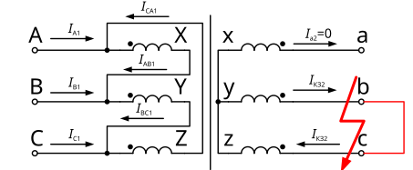

Аналитический вывод: Двухфазное КЗ (B-C) за трансформатором Δ/Y-0

| Фаза сети ВН | Выражение через $I_{КЗ}^{(3)}$ | Выражение через $I_{КЗ}^{(2)}$ | Коэффициент распределения | Характеристика фазы в аварийном режиме |
|---|---|---|---|---|
| Фаза А | $\frac{I_{КЗ2}^{(3)}}{k_{тт}}$ | $\frac{2}{\sqrt{3}} \cdot \frac{I_{КЗ2}^{(2)}}{k_{тт}}$ | 1.155 | Особая фаза. Ток в 2 раза выше, чем в неповрежденных фазах. |
| Фаза В | $-\frac{I_{КЗ2}^{(3)}}{2 k_{тт}}$ | $-\frac{1}{\sqrt{3}} \cdot \frac{I_{КЗ2}^{(2)}}{k_{тт}}$ | 0.577 | Ток равен половине тока фазы А, вектор развернут на 180°. |
| Фаза С | $-\frac{I_{КЗ2}^{(3)}}{2 k_{тт}}$ | $-\frac{1}{\sqrt{3}} \cdot \frac{I_{КЗ2}^{(2)}}{k_{тт}}$ | 0.577 | Ток равен половине тока фазы А, вектор развернут на 180°. |
При однофазном КЗ за трансформатором со схемой соединения Δ/Y-0, при условии \(Z_1=Z_2=Z_0\):
\[I_{КЗ2 \ \Delta/(Y-0)}^{(1)}=\frac{\sqrt{3} U_{л.2}}{3k_{тт} \sqrt{r_1^2+x_1^2 }}=\frac{U_{л.2}}{\sqrt{3} k_{тт} Z_1 }=I_{КЗ.2 \ \Delta/(Y-0)}^{(1)}\]
Коэффициент трансформации \(k_{т.\Delta/Y}=\frac{U_л}{U_ф} =\sqrt{3}\), фазные токи в высоковольтных обмотках:
\[\dot{I}_{AB1}=\frac{2}{3} \cdot \frac{I_{КЗ2 \ \Delta/(Y-0)}^{(1)}}{k_{тт} k_{т.\Delta/Y}}\] \[\dot{I}_{BC1}=-\frac{1}{3} \cdot \frac{I_{КЗ2 \ \Delta/(Y-0)}^{(1)}}{k_{тт} k_{т.\Delta/Y}}\] \[\dot{I}_{CA1}=-\frac{1}{3} \cdot \frac{I_{КЗ2 \ \Delta/(Y-0)}^{(1)}}{k_{тт} k_{т.\Delta/Y}}\]
Выразим линейные токи через фазные для схемы соединения обмоток в треугольник:
\[\begin{cases}\dot{I}_{A1} = \dot{I}_{AB1}-\dot{I}_{CA1} \\ \dot{I}_{B1} = \dot{I}_{BC1}-\dot{I}_{AB1} \\ \dot{I}_{C1} = \dot{I}_{CA1}-\dot{I}_{BC1} \end{cases}\]
Подставив значения, получаем итоговые линейные токи:
\[\begin{cases}\dot{I}_{A1}= \frac{I_{КЗ2 \ \Delta/(Y-0)}^{(1)}}{\sqrt{3} k_{тт}}=0.577 \cdot \frac{I_{КЗ2 \ \Delta/(Y-0)}^{(1)}}{k_{тт}} \\ \dot{I}_{B1}=-\frac{I_{КЗ2 \ \Delta/(Y-0)}^{(1)}}{\sqrt{3} k_{тт}}=-0.577 \cdot \frac{I_{КЗ2 \ \Delta/(Y-0)}^{(1)}}{k_{тт}} \\ \dot{I}_{C1}=0 \end{cases}\]
| Сторона трансформатора | Тип тока | Фаза A | Фаза B | Фаза C | Ток в нейтрали / Нулевая последовательность |
|---|---|---|---|---|---|
| Низшее напряжение (НН, звезда \(Y_n\)) | Линейные / Фазные токи | \(I_{КЗ}^{(1)}\) | \(0\) | \(0\) | \(I_N = 3I_0 = I_{КЗ}^{(1)}\) |
| Относительные модули | \(1\) | \(0\) | \(0\) | ||
| Высшее напряжение (ВН, треугольник \(\Delta\)) | Фазные токи (в обмотках) | \(\frac{2}{3} \cdot \frac{I_{КЗ}^{(1)}}{k_{тт} \sqrt{3}}\) | \(-\frac{1}{3} \cdot \frac{I_{КЗ}^{(1)}}{k_{тт} \sqrt{3}}\) | \(-\frac{1}{3} \cdot \frac{I_{КЗ}^{(1)}}{k_{тт} \sqrt{3}}\) | \(I_0\) замыкается внутри
\(\Delta\) (во внешнюю сеть не выходит) |
| Линейные токи (в линию) | \(0.577 \cdot \frac{I_{КЗ}^{(1)}}{k_{тт}}\) | \(-0.577 \cdot \frac{I_{КЗ}^{(1)}}{k_{тт}}\) | \(0\) |
Ниже приведены математические выводы распределения токов для двухфазного и однофазного коротких замыканий (КЗ) за трансформатором со схемой соединения Y/Y-0.
Модуль тока двухфазного КЗ в общем виде определяется выражением:
\[I_{КЗ}^{(2)} = |\dot{I}_A| = |\dot{I}_C| = \frac{\sqrt{3} U_ф}{\sqrt{(r_1+r_2)^2 + (x_1+x_2)^2}} = \frac{U_л}{\sqrt{(r_1+r_2)^2 + (x_1+x_2)^2}}\]
При условии равенства полных сопротивлений прямой и обратной последовательностей (\(Z_1 = Z_2\)):
\[I_{КЗ}^{(2)} = \frac{U_л}{2\sqrt{r_1^2 + x_1^2}} = \frac{\sqrt{3}}{2} I_{КЗ}^{(3)}\]
Токи на стороне ВН при двухфазном КЗ за трансформатором со схемой соединения Y/Y-0 распределяются следующим образом:
\[\begin{cases} \dot{I}_{A1} = \frac{\sqrt{3}}{2} \cdot \frac{I_{КЗ2}^{(3)}}{k_{тт}} \\ \dot{I}_{B1} = 0 \\ \dot{I}_{C1} = -\dot{I}_{A1} \end{cases}\]
Модуль тока однофазного КЗ определяется через симметричные составляющие:
\[I_{КЗ}^{(1)} = |\dot{I}_A| = \frac{3 U_{ф2}}{\sqrt{(r_1+r_2+r_0)^2 + (x_1+x_2+x_0)^2}} = \frac{\sqrt{3} U_{л.2}}{\sqrt{(r_1+r_2+r_0)^2 + (x_1+x_2+x_0)^2}}\]
При условии, что \(Z_1 = Z_2\), ток КЗ на вторичной стороне равен:
\[I_{КЗ2}^{(1)} = \frac{\sqrt{3} U_{л2}}{\sqrt{(2r_1+r_0)^2 + (2x_1+x_0)^2}}\]
Непосредственно для КЗ за трансформатором Y/Y-0 с учетом его параметров:
\[I_{КЗ2.Y/Y-0}^{(1)} = \frac{\sqrt{3} U_{л2}}{\sqrt{(2r_{1.т}+r_{0.т})^2 + (2x_{1.т}+x_{0.т})^2}} = \frac{\sqrt{3} U_{л2}}{Z_{т.Y/Y-0(1)}}\]
Трансформация токов на сторону высшего напряжения (ВН) с учетом коэффициента трансформации \(k_{тт}\):
| Вид повреждения | Сторона ВН / НН | Фаза A | Фаза B | Фаза C | Ток в нейтрали / Особенности |
|---|---|---|---|---|---|
| Двухфазное КЗ (между B и C) | Вторичная сторона (НН) | \(0\) | \(I_{КЗ2}^{(2)}\) | \(-I_{КЗ2}^{(2)}\) | \(I_N = 0\) (нейтраль не задействована) |
| Первичная сторона (ВН) | \(0\) | \(\frac{\sqrt{3}}{2} \cdot \frac{I_{КЗ2}^{(3)}}{k_{тт}}\) | \(-\frac{\sqrt{3}}{2} \cdot \frac{I_{КЗ2}^{(3)}}{k_{тт}}\) | Токи на ВН полностью повторяют распределение сторон НН | |
| Однофазное КЗ (фаза A) | Вторичная сторона (НН) | \(I_{КЗ2.Y/Y-0}^{(1)}\) | \(0\) | \(0\) | \(I_N = I_{КЗ2.Y/Y-0}^{(1)}\) (полный ток КЗ в нейтрали) |
| Первичная сторона (ВН) | \(\frac{2}{3} \cdot \frac{I_{КЗ2.Y/Y-0}^{(1)}}{k_{тт}}\) | \(-\frac{1}{3} \cdot \frac{I_{КЗ2.Y/Y-0}^{(1)}}{k_{тт}}\) | -\(\frac{1}{3} \cdot \frac{I_{КЗ2.Y/Y-0}^{(1)}}{k_{тт}}\) | Ток нулевой последовательности трансформируется в питающую сеть ВН |
Каждая полуобмотка низшего напряжения (НН) индуктивно связана с обмоткой высшего напряжения (ВН) другой фазы. Из-за встречно-последовательного включения полуобмоток коэффициент трансформации по отношению к одной секции зигзага составляет \(k_{т.об.Y/Z} = \frac{U_ф}{U_ф / \sqrt{3}} = \sqrt{3}\).
🗺️ МЕСТО ДЛЯ СХЕМЫ И ЭПЮРЫ ТОКОВ Y/Z-11
Замените этот блок тегом
<img src="Images/T_Y_Z11.svg" alt="Трансформатор Y/Z-11 и эпюра токов" style="max-width: 100%; height: auto;">
Модуль тока двухфазного короткого замыкания на вторичной стороне при равенстве сопротивлений прямой и обратной последовательностей (\(Z_1 = Z_2\)) равен:
\[I_{КЗ2}^{(2)} = \frac{U_л}{2\sqrt{r_1^2 + x_1^2}} = \frac{\sqrt{3}}{2} I_{КЗ2}^{(3)}\]
Токи в поврежденных фазах на стороне НН равны по модулю и противоположны по фазе:
\[\dot{I}_A = \frac{\sqrt{3}}{2} I_{КЗ2}^{(3)}, \quad \dot{I}_B = 0, \quad \dot{I}_C = -\dot{I}_A\]
Составляющие фазных токов в обмотках ВН (с учетом коэффициентов трансформации \(k_{тт}\) и \(k_{т.об.Y/Z}\)):
\[\dot{I}_{AI1} = \frac{\sqrt{3}}{2} \cdot \frac{I_{КЗ2.Y/Z}^{(3)}}{k_{т.об.Y/Z} \cdot k_{тт}}, \quad \dot{I}_{AII1} = -\frac{\sqrt{3}}{2} \cdot \frac{I_{КЗ2.Y/Z}^{(3)}}{k_{т.об.Y/Z} \cdot k_{тт}}\] \[\dot{I}_{BI1} = 0, \quad \dot{I}_{BII1} = 0\] \[\dot{I}_{CI1} = -\frac{\sqrt{3}}{2} \cdot \frac{I_{КЗ2.Y/Z}^{(3)}}{k_{т.об.Y/Z} \cdot k_{тт}}, \quad \dot{I}_{CII1} = \frac{\sqrt{3}}{2} \cdot \frac{I_{КЗ2.Y/Z}^{(3)}}{k_{т.об.Y/Z} \cdot k_{тт}}\]
Суммарные линейные токи на стороне ВН определяются наложением составляющих от полуобмоток:
\[\begin{cases} \dot{I}_{A1} = \dot{I}_{AI1} + \dot{I}_{CII1} \\ \dot{I}_{B1} = \dot{I}_{BI1} + \dot{I}_{AII1} \\ \dot{I}_{C1} = \dot{I}_{CI1} + \dot{I}_{BII1} \end{cases}\]
Выразив их через трехфазный ток КЗ \(I_{КЗ2}^{(3)}\), получаем распределение токов на ВН по фазам:
\[\begin{cases} \dot{I}_{A1} = \frac{I_{КЗ2.Y/Z}^{(3)}}{k_{тт}} \\ \dot{I}_{B1} = -\frac{I_{КЗ2.Y/Z}^{(3)}}{2k_{тт}} \\ \dot{I}_{C1} = -\frac{I_{КЗ2.Y/Z}^{(3)}}{2k_{тт}} \end{cases} \quad \text{или через ток } I_{КЗ2}^{(2)}: \quad \begin{cases} \dot{I}_{A1} = \frac{2}{\sqrt{3}} \cdot \frac{I_{КЗ2.Y/Z}^{(2)}}{k_{тт}} \\ \dot{I}_{B1} = -\frac{I_{КЗ2.Y/Z}^{(2)}}{\sqrt{3}k_{тт}} \\ \dot{I}_{C1} = -\frac{I_{КЗ2.Y/Z}^{(2)}}{\sqrt{3}k_{тт}} \end{cases}\]
При однофазном КЗ на стороне зигзага (при условии \(Z_1 = Z_2 = Z_0\)) модуль тока КЗ равен:
\[I_{КЗ2.Y/Z}^{(1)} = \frac{\sqrt{3} U_{л.2}}{3 k_{тт} \sqrt{r_1^2 + x_1^2}} = \frac{U_{л.2}}{\sqrt{3} k_{тт} Z_1} = I_{КЗ2.Y/Z}^{(3)}\]
Составляющие фазных токов в высоковольтных обмотках от действия полуобмоток зигзага:
\[\dot{I}_{AI1} = \frac{2}{3} \cdot \frac{I_{КЗ2.Y/Z}^{(3)}}{k_{т.об.Y/Z} \cdot k_{тт}}, \quad \dot{I}_{AII1} = -\frac{2}{3} \cdot \frac{I_{КЗ2.Y/Z}^{(3)}}{k_{т.об.Y/Z} \cdot k_{тт}}\] \[\dot{I}_{BI1} = -\frac{1}{3} \cdot \frac{I_{КЗ2.Y/Z}^{(3)}}{k_{т.об.Y/Z} \cdot k_{тт}}, \quad \dot{I}_{BII1} = \frac{1}{3} \cdot \frac{I_{КЗ2.Y/Z}^{(3)}}{k_{т.об.Y/Z} \cdot k_{тт}}\] \[\dot{I}_{CI1} = -\frac{1}{3} \cdot \frac{I_{КЗ2.Y/Z}^{(3)}}{k_{т.об.Y/Z} \cdot k_{тт}}, \quad \dot{I}_{CII1} = \frac{1}{3} \cdot \frac{I_{КЗ2.Y/Z}^{(3)}}{k_{т.об.Y/Z} \cdot k_{тт}}\]
Итоговые линейные токи первичной стороны (ВН) определяются геометрическим сложением токов полуобмоток:
\[\begin{cases} \dot{I}_{A1} = \dot{I}_{AI1} + \dot{I}_{CII1} \\ \dot{I}_{B1} = \dot{I}_{BI1} + \dot{I}_{AII1} \\ \dot{I}_{C1} = \dot{I}_{CI1} + \dot{I}_{BII1} \end{cases}\]
После подстановки и математических преобразований получаем результирующие линейные токи со стороны ВН:
\[\begin{cases} \dot{I}_{A1} = \frac{I_{КЗ2.Y/Z}^{(3)}}{\sqrt{3} k_{тт}} = 0.577 \cdot \frac{I_{КЗ2.Y/Z}^{(3)}}{k_{тт}} \\ \dot{I}_{B1} = -\frac{I_{КЗ2.Y/Z}^{(3)}}{\sqrt{3} k_{тт}} = -0.577 \cdot \frac{I_{КЗ2.Y/Z}^{(3)}}{k_{тт}} \\ \dot{I}_{C1} = 0 \end{cases}\]
| Вид повреждения | Сторона ВН / НН | Фаза A | Фаза B | Фаза C | Ток в нейтрали / Особенности |
|---|---|---|---|---|---|
| Двухфазное КЗ (между A и C) | Вторичная сторона (НН) | \(\frac{\sqrt{3}}{2} I_{КЗ2}^{(3)}\) | \(0\) | \(-\frac{\sqrt{3}}{2} I_{КЗ2}^{(3)}\) | \(I_N = 0\) |
| Первичная сторона (ВН) | \(\frac{I_{КЗ2}^{(3)}}{k_{тт}}\) | \(-\frac{I_{КЗ2}^{(3)}}{2k_{тт}}\) | \(-\frac{I_{КЗ2}^{(3)}}{2k_{тт}}\) | На стороне ВН токи текут во всех трех фазах в пропорции \(1 : -0.5 : -0.5\) | |
| Однофазное КЗ (фаза A) | Вторичная сторона (НН) | \(I_{КЗ2.Y/Z}^{(1)}\) | \(0\) | \(0\) | \(I_N = I_{КЗ2.Y/Z}^{(1)}\) |
| Первичная сторона (ВН) | \(0.577 \cdot \frac{I_{КЗ2.Y/Z}^{(3)}}{k_{тт}}\) | \(-0.577 \cdot \frac{I_{КЗ2.Y/Z}^{(3)}}{k_{тт}}\) | \(0\) | Токи нулевой последовательности взаимно компенсируются в обмотках НН и не трансформируются в сеть ВН. В фазе C ток равен 0. |